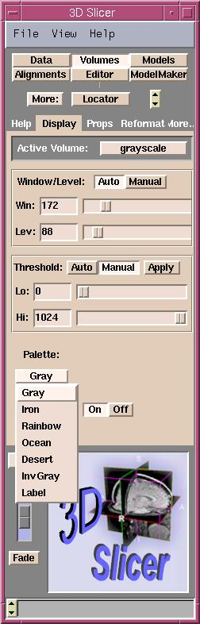

Selecting a color for a model is very similar to selecting a color for a volume.
Use the Palette pull-down menu (on the Display tab of the Volumes
panel) to select a color scheme to colorize your gray-scale
volume.
This can help you distinguish different regions of interest better.
You can select one of seven available color schemes:
Gray, Iron, Rainbow, Ocean, Desert, InvGray, or Label.
